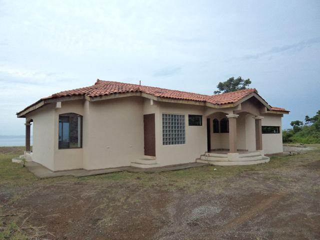
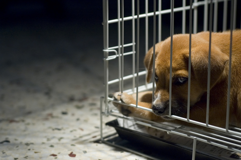

El Opresor
Bancos se benefician al rematar más viviendas.
Redactado por Hanzel Quirós.
La creciente ola de desempleo en el país ha provocado que la morosidad aumente con respecto al pago de préstamos,
las personas afectadas se atrasan varios meses antes de que el banco tome la propiedad como parte de pago.
Los bancos se han beneficiado ya que muchos de los clientes habían amortizado más de la mitad del monto acordado
antes de perder la casa. Estas viviendas se rematarán a un precio menor de lo que costaron para cubrir la cifra faltante,
y el excedente servirá al banco para formalizar nuevos préstamos y continuar el ciclo que aumenta sus ganancias.

Dueños de mascotas deberán pagar impuestos por mantenerlas.
Redactado por Hanzel Quirós.
Como método para recaudar fondos para el estado desde este 1ro de octubre,
todas las personas que posean mascotas en sus casas deberán pagar un "permiso especial",
que se cancelará cada 6 meses (mientras la mascota esté con vida). La iniciativa busca reducir
el ínidice de maltrato animal y abandono por parte de dueños irresponsables.
Solo aquellos que de verdad quieran su mascota, pagarán el permiso. El precio oscila los 20 mil colones
para animales pequeños e irá en aumento según el peso. Además, el permiso se acredita para una sola mascota,
por lo que si quiere más de una; deberá pagar adicionalmente por cada una de ellas.
Los centros de refugio de animal se preparan para recibir a los animalitos que no cuenten con un permiso,
en caso de sobrepoblación, se aplicará la eutanasia en los animales más viejos.
